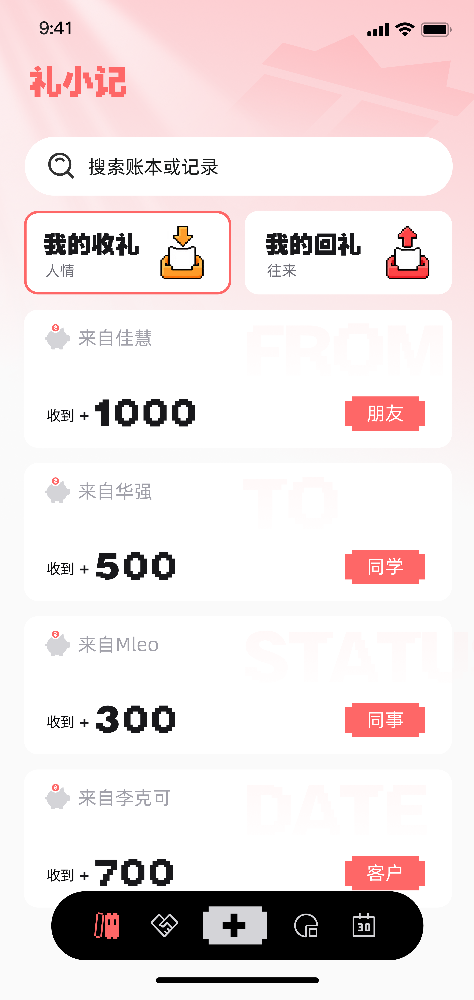
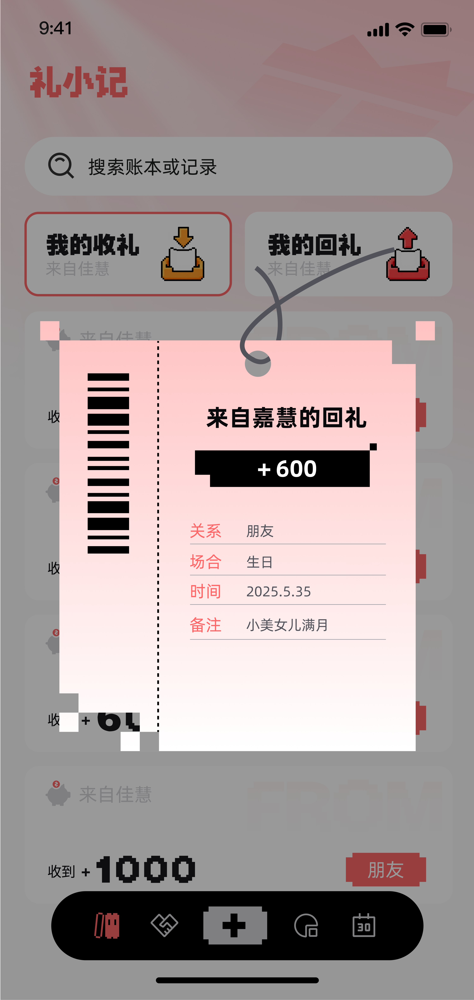
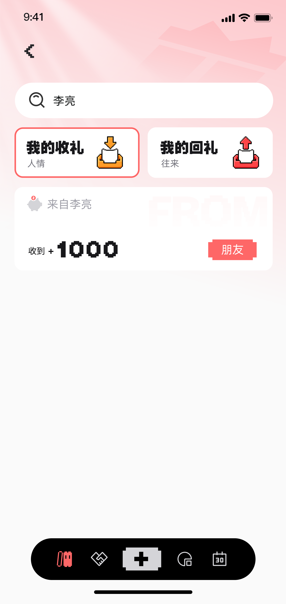
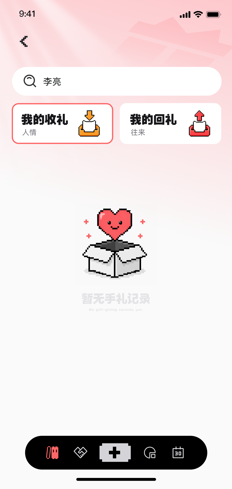

过去的痛点
- 礼金往来分散在聊天和备忘录里，回查成本高。
- 亲友关系复杂，金额和节点容易记错。
- 节日、婚宴、探望等事项缺乏统一提醒。
2026 创新应用赛参赛项目
礼小记帮助你系统管理礼金收支、关系档案和关键日程，把“怕忘、怕乱、怕算错”变成“随手记、看得清、跟得上”。

问题与方案
核心功能
支持收礼/回礼双向记录，关联金额、日期、场景、备注。
按亲友、同学、同事等分组管理，快速定位目标联系人。
按月/年/全部维度统计收入、支出与净值变化趋势。
记录重要节点，避免错过关键时间点和礼节场景。
演示截图



技术与创新
Flutter + SharedPreferences，本地存储优先，启动快、部署轻。
把“记账思维”升级为“关系网络思维”，同一联系人维度可串联多次往来与重要节点。
聚焦高频真实场景，具备明确需求验证路径，可快速迭代到家庭/社区级服务产品。